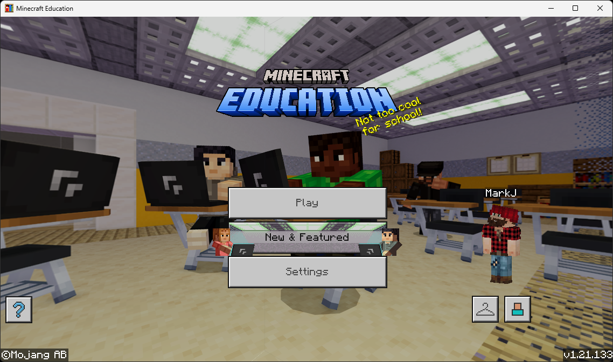
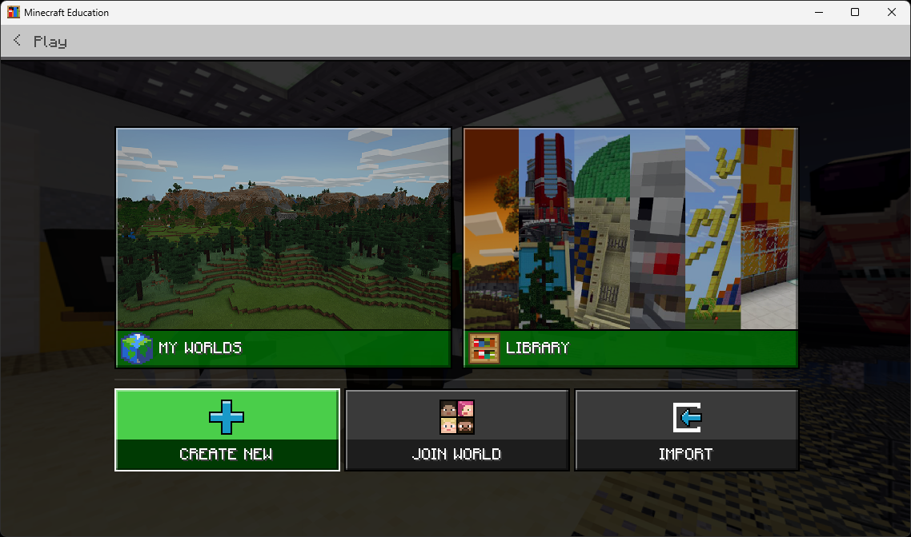
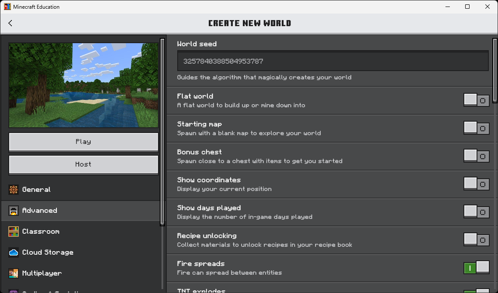
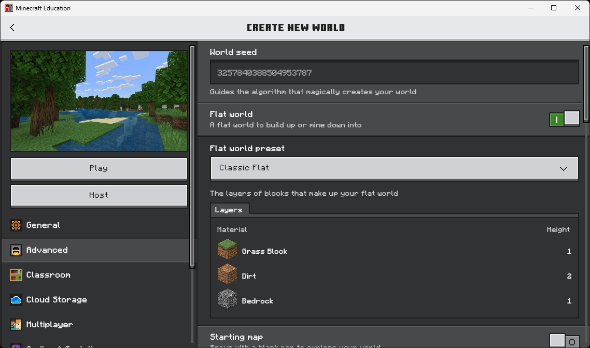
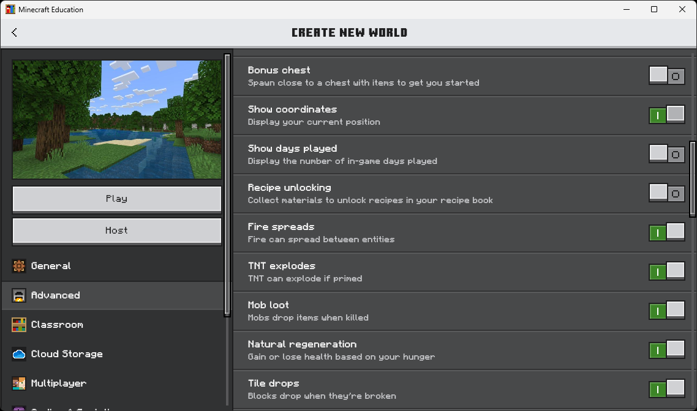
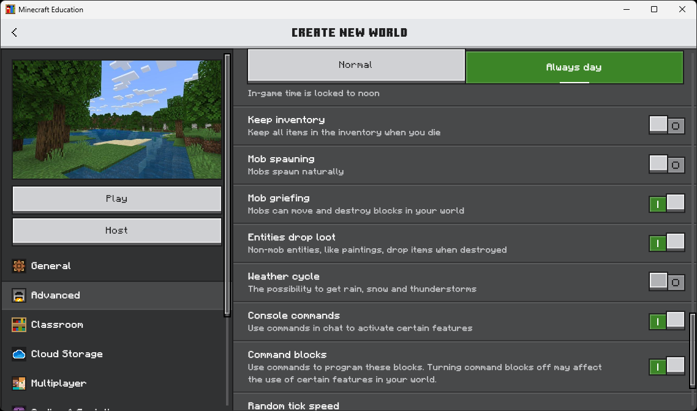
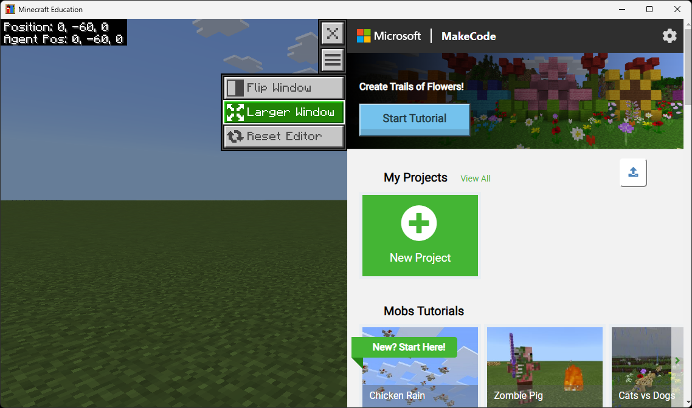
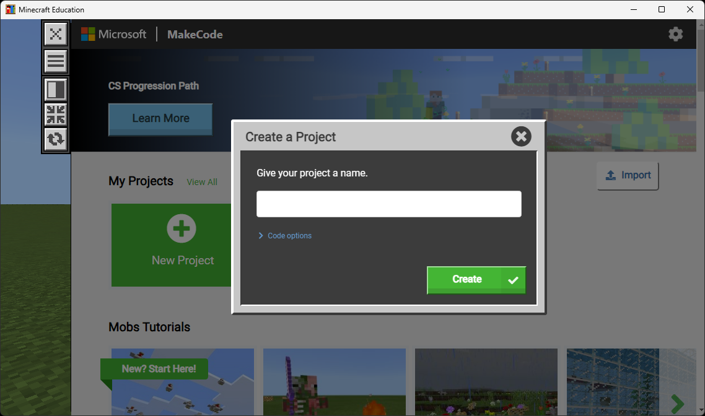
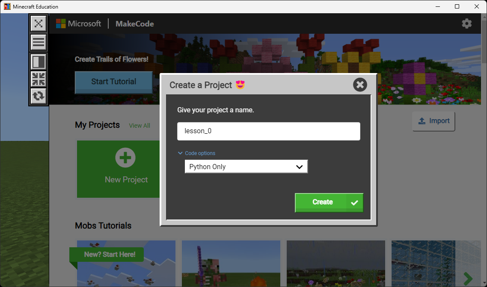
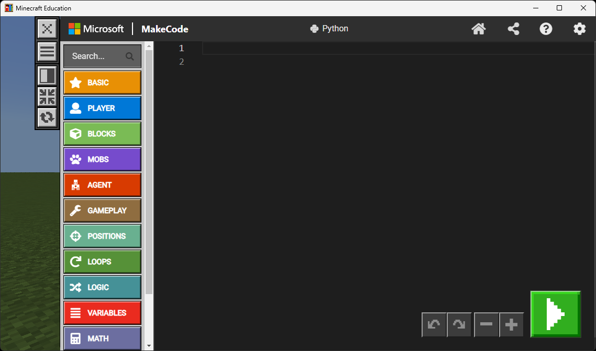

Get Minecraft Ready
Set up a fresh, distraction-free world before every Minecraft lesson.
Do this every lesson
Start every Minecraft lesson by completing Lesson 0. Create a brand-new world with the settings below. A fresh world keeps each lesson's work separate, makes the Agent easier to see, and avoids leftover blocks or terrain from a previous session getting in your way.
STEP 1 Turn on Fullscreen
Fullscreen mode hides distractions and gives you the biggest possible view of the world.
- Open Minecraft Education and sign in if you aren't already. You should land on the main menu shown below.
- On the main menu, click Settings.
- Click Video.
- Turn Fullscreen on.
- Click Back to return to the main menu.

STEP 2 Create a New Flat World
Now create a brand-new world with the specific settings shown below. Work through each phase in order — each one includes a screenshot of exactly what the screen should look like.
A. Get to the “Create New World” screen
- From the main menu, click Play.
- You'll see the My Worlds / Library screen. Click Create New, then New.

B. Open the Advanced tab and switch to Flat World
- On the left side of the Create New World screen, click the Advanced tab.
- Find Flat world near the top and turn it ON.
- When the Flat world preset dropdown appears, leave it on Classic Flat (Grass / Dirt / Bedrock layers).


C. Turn on Show Coordinates
- Scroll down on the Advanced tab until you see Show coordinates.
- Turn it ON. (So you can see exactly where you and the Agent are standing.)
- Make sure Bonus chest stays OFF — you don't need starting items.

D. Always Day & no mobs
- Keep scrolling. Set the Daylight Cycle selector to Always day. (No nighttime.)
- Turn Mob spawning OFF. (No zombies or skeletons interrupting your code.)
- If you see a Weather cycle toggle, turn it OFF too — no rain or snow.

E. Click Create
- Click the big Create (or Play) button on the left.
- Wait for the world to load. You should drop into a flat green field with the sun directly overhead and your coordinates visible in the top-left corner.
Check yourself
You're standing in a flat world, the sun is up, there are no zombies, and you can see coordinates (X, Y, Z numbers) in a corner of the screen. If something looks off, pause the game and open Settings → Game to fix it — or simply leave the world and create a new one.
STEP 3 Open MakeCode (Python Only)
Every lesson uses MakeCode as the code editor. Open it once now so it's ready when you start the lesson.
A. Open Code Builder and choose MakeCode
- In the world, press C on your keyboard to open Code Builder.
- If it asks which editor, choose MakeCode.
- You should now see the MakeCode home screen with the tutorial picker, My Projects, and a green New Project button.

B. Start a new project
- Click New Project.
- A Create a Project dialog opens with a blank name field.

C. Name your project and pick Python Only
- Type a project name. For this setup, use
lesson_0. For other lessons use names likelesson_1,lesson_2, etc. - Click Code options (under the name field).
- Change the dropdown to Python Only. (All our lessons use Python.)
- Click the green Create button.

D. You're in the editor
MakeCode opens with an empty Python file on the right and category buttons (BASIC, PLAYER, BLOCKS, MOBS, AGENT, …) on the left. The green play button in the bottom-right runs your code in the Minecraft world.

lesson_1, lesson_2, …) so you can find them later under My Projects.
World is ready
Head back to the Minecraft lessons page and open the lesson you came here to do.
Back to Minecraft Lessons